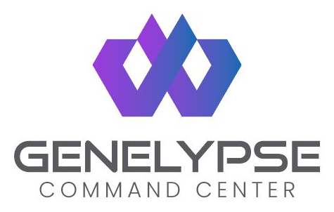
El video guía dura 25 minutos y está dividido en tres bloques, uno por rol. Cada enlace abre YouTube en el segundo exacto. Los mismos enlaces aparecen al inicio de cada sección de este manual.
| ▶ 0:00 | SUPER ADMIN · Qué es Command Center y qué puede el super admin |
| ▶ 0:29 | Entrar al sistema |
| ▶ 0:48 | La pantalla de Empresas y la tira de totales |
| ▶ 1:11 | El filtro de mes: toda la app mira el mismo periodo |
| ▶ 1:28 | Crear una empresa · paso 1: datos |
| ▶ 1:51 | Crear una empresa · paso 2: sedes |
| ▶ 2:11 | Crear una empresa · paso 3: módulos |
| ▶ 2:32 | Crear una empresa · paso 4: financiaciones y recaudo |
| ▶ 3:01 | El menú de una empresa: qué es cada cosa |
| ▶ 3:35 | Productos: la lista de precios de la empresa |
| ▶ 4:00 | Sedes: crear, sede principal y archivar |
| ▶ 4:25 | Equipo: agregar un comercial |
| ▶ 4:52 | Mover a alguien de sede y enlazarlo con su cuenta |
| ▶ 5:22 | Crear las cuentas de todo el equipo de una vez |
| ▶ 5:45 | Quitar a alguien del equipo sin perder su historia |
| ▶ 6:05 | Usuarios de la plataforma: crear una cuenta |
| ▶ 6:29 | Cambiar el rol y volver a poner una contraseña |
| ▶ 7:04 | Eliminar un usuario: qué pasa de verdad |
| ▶ 7:28 | Restaurar un usuario eliminado |
| ▶ 7:51 | Objetivos comerciales del mes |
| ▶ 8:23 | Leer el dashboard de una empresa |
| ▶ 8:51 | Desglose por sede y ranking de comerciales |
| ▶ 9:24 | Indicadores: la pantalla que cruza las dos fuentes |
| ▶ 9:53 | Configuración de la empresa |
| ▶ 10:22 | Zona de riesgo: archivar y eliminar definitivamente |
| ▶ 10:57 | Auditoría: quién hizo qué y cuándo |
| ▶ 11:26 | Resumen del rol de super admin |
| ▶ 12:00 | COORDINADOR · Qué es un coordinador y hasta dónde llega |
| ▶ 12:35 | Entrar y qué ve al entrar |
| ▶ 12:57 | El dashboard de su empresa |
| ▶ 13:18 | Ranking del equipo y quién registró hoy |
| ▶ 13:42 | Indicadores: detectar quién registra mal |
| ▶ 14:07 | Definir las metas del mes |
| ▶ 14:35 | Ventas: por qué una venta guardada no se toca |
| ▶ 15:27 | Pagos: los abonos y el saldo de cada crédito |
| ▶ 15:50 | Gestión diaria: la jornada del equipo |
| ▶ 16:15 | Agendas: las citas del punto |
| ▶ 16:31 | Ingreso y gasto: la caja del punto |
| ▶ 16:55 | Productos y precios |
| ▶ 17:16 | Sedes de su empresa |
| ▶ 17:29 | Equipo: agregar, mover de sede y quitar |
| ▶ 17:54 | Configuración: lo que sí puede tocar |
| ▶ 18:12 | Lo que un coordinador no puede hacer |
| ▶ 18:44 | Resumen del rol de coordinador |
| ▶ 19:13 | ASESOR · Qué hace un asesor en Command Center |
| ▶ 19:41 | Entrar y cambiar tu contraseña |
| ▶ 20:00 | Lo que ve un asesor: su menú |
| ▶ 20:26 | Registrar una venta · quién compra |
| ▶ 20:56 | Registrar una venta · qué compró |
| ▶ 21:25 | Registrar una venta · la financiación |
| ▶ 22:11 | Registrar un abono |
| ▶ 22:33 | Registrar la jornada · llamadas y agendas |
| ▶ 23:04 | Registrar la jornada · atención y cola del CRM |
| ▶ 23:38 | Agendar una cita |
| ▶ 23:59 | Ver tus cifras y tus metas |
| ▶ 24:18 | Desde el celular |
| ▶ 24:41 | Resumen y las cuatro reglas que no se olvidan |
| Rol | Qué ve y qué puede hacer |
|---|---|
| Super Admin | Ve todas las empresas y todo el menú. Es el único que crea empresas, crea cuentas de usuario, define contraseñas, elimina o restaura usuarios, corrige ventas ya guardadas, conecta Kommo, y ve la sección (Usuarios y Auditoría). |
| Coordinador | Administra una empresa concreta: ve la sección de esa empresa (Productos, Sedes, Equipo, Kommo, Configuración), edita metas e indicadores, registra caja y puede elegir el responsable al registrar ventas y jornadas. |
| Asesor | Ve solo las empresas donde está asignado. Registra ventas, pagos y su jornada, siempre a su propio nombre. No ve ni . |
Ver en el video: ▶ 3:01
De arriba hacia abajo:
En el celular el menú sale como panel lateral con el botón de la esquina superior izquierda.
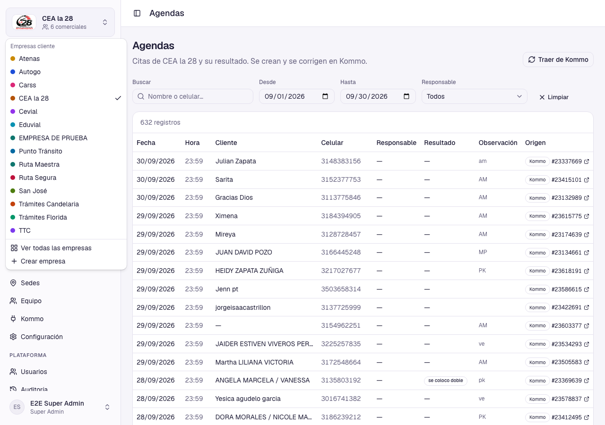
Ver en el video: ▶ 1:11
En la barra superior de , , y aparece el mes que se está mirando, con las flechas Mes anterior y Mes siguiente. Un clic sobre el nombre del mes abre un calendario para saltar a cualquier mes. El mes elegido se recuerda en el navegador y aplica a toda la aplicación.
Las pantallas de Ventas, Pagos, Gestión Diaria, Agendas e Ingreso y Gasto no usan ese mes: tienen sus propios filtros Desde y Hasta.
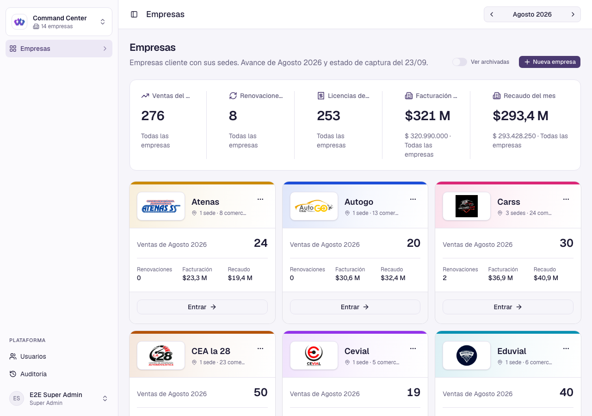
Ver en el video: ▶ 24:18
La aplicación funciona en el navegador del celular con la misma dirección. El menú se abre con el botón de la esquina superior izquierda y los formularios ocupan toda la pantalla.
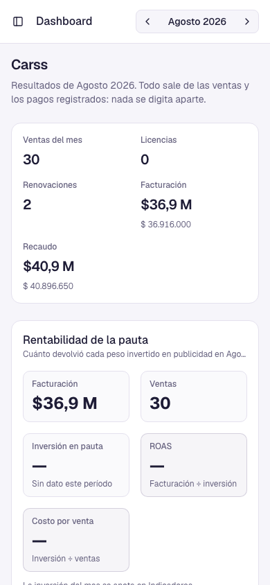
Ver en el video: ▶ 0:29 · ▶ 12:35 · ▶ 19:41
Ruta: /login
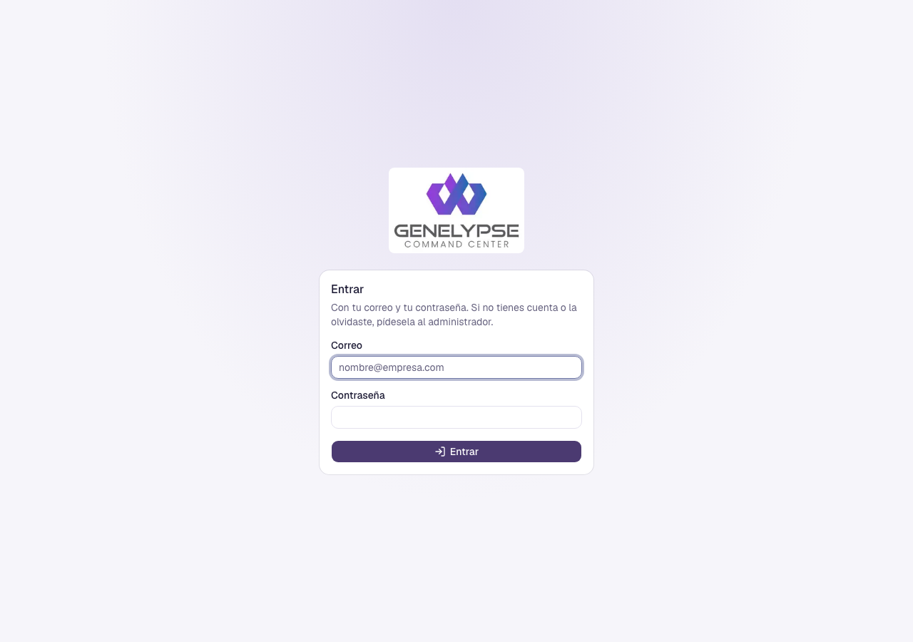
Ver en el video: ▶ 19:41
Ruta: /definir-clave
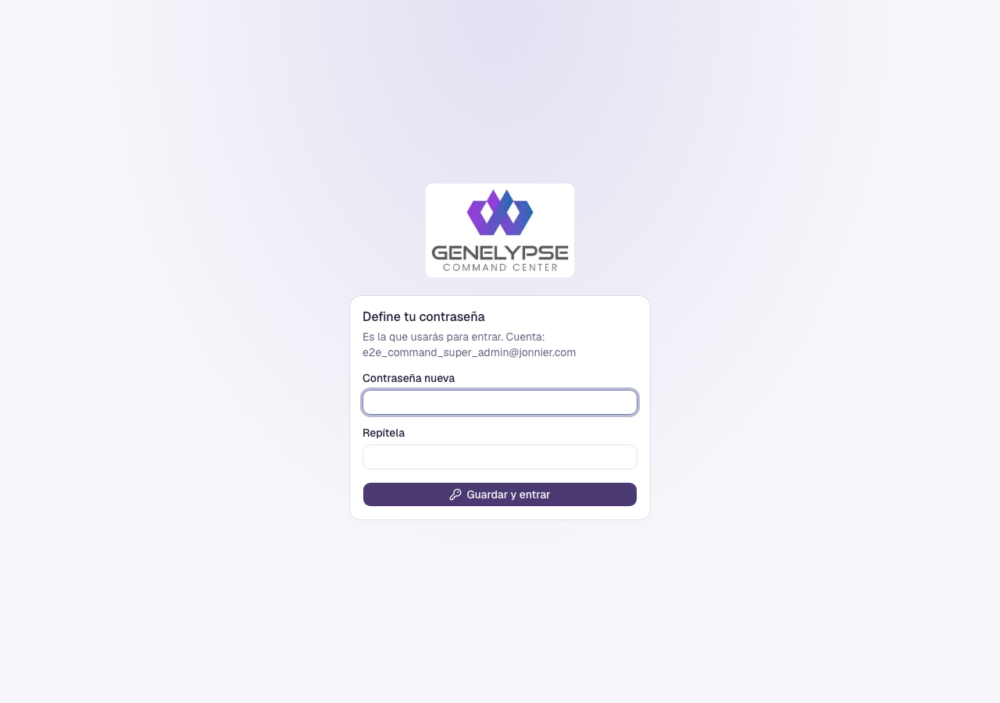
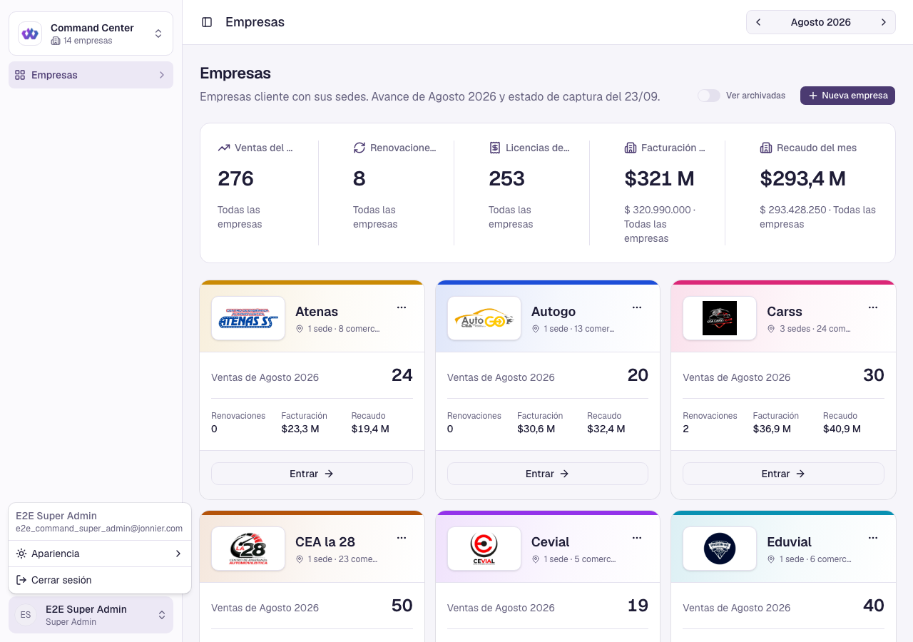
Menú de usuario → . Vuelve a la pantalla de entrada.
Ruta: /admin/usuarios · Menú:
La pantalla tiene dos pestañas, Activos y Eliminados (N), y el botón Nuevo usuario. Cada fila muestra Usuario, Rol global, Estado, Empresas, Registros y un menú ⋯.
Ver en el video: ▶ 6:05
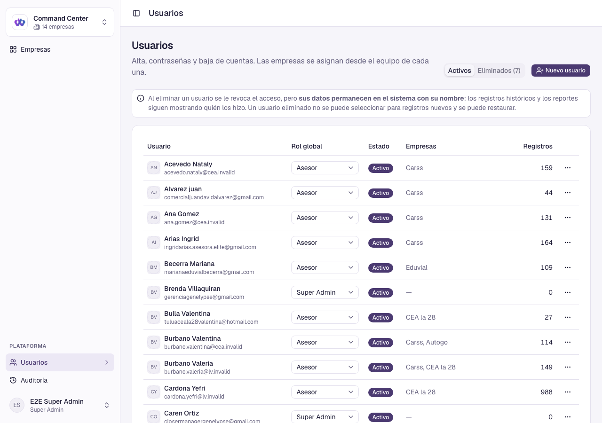
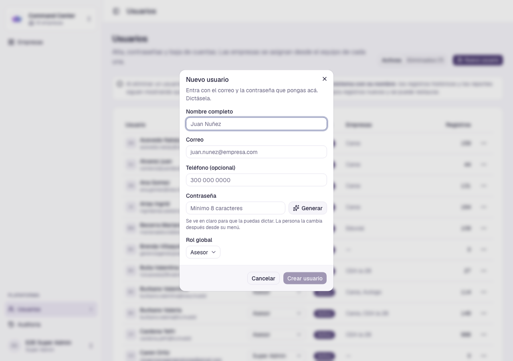
Ver en el video: ▶ 6:29
El Rol global también se cambia directamente desde el selector de la columna, sin abrir el diálogo. Nadie puede cambiar su propio rol.
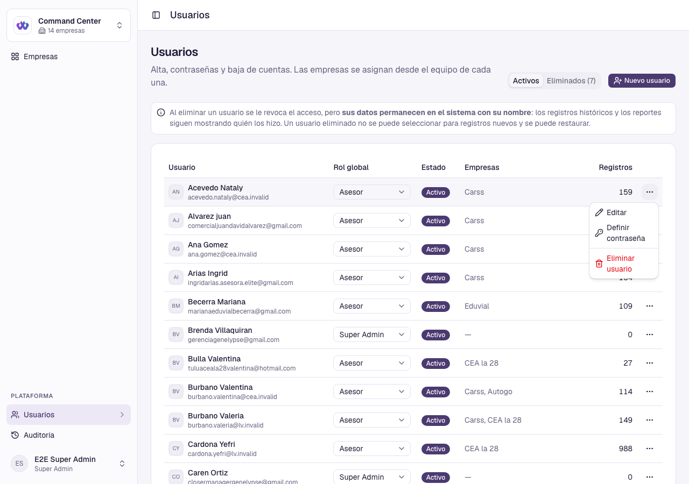
Ver en el video: ▶ 6:29
Esta es la única forma de recuperar una cuenta que olvidó su clave.
Ver en el video: ▶ 7:04
La eliminación es lógica: la persona ya no puede entrar y desaparece de las listas, pero todas sus ventas, pagos y jornadas siguen apareciendo a su nombre en los reportes históricos. No se puede eliminar a uno mismo.
Ver en el video: ▶ 7:28
Si el Estado es “inactivo”, el menú ⋯ muestra . Las cuentas provisionales creadas en bloque (7.4) o las que llegaron del histórico pueden estar en este estado.
El acceso de una persona se decide en dos niveles: el rol global de su cuenta y las empresas y sedes donde está asignada. Un Asesor sin empresas no ve nada; un Super Admin ve todo sin necesidad de asignación.
Ver en el video: ▶ 6:29
En , columna Rol global, elija en el selector. Se guarda al instante.
| Quiero que la persona… | Rol global | Además |
|---|---|---|
| Solo registre ventas, pagos y su jornada en su empresa | Asesor | Agregarla al Equipo de la empresa (4.2) y enlazar su cuenta a su ficha (4.3) |
| Administre una empresa (productos, sedes, equipo, metas, caja) | Coordinador | Agregarla al Equipo de la empresa |
| Administre toda la plataforma | Super Admin | Nada más: ve todas las empresas |
Ver en el video: ▶ 4:25 · ▶ 17:29
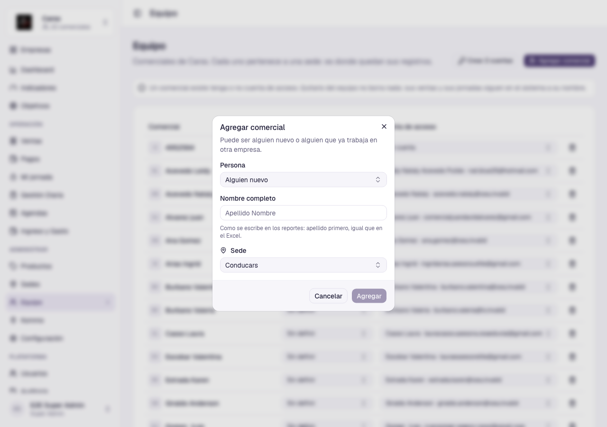
Ver en el video: ▶ 4:52
En , columna Cuenta de acceso, elija la cuenta de la persona (o “Sin cuenta”). Sin este enlace la persona ve “Tu cuenta no está enlazada a nadie del equipo” al abrir Mi jornada.
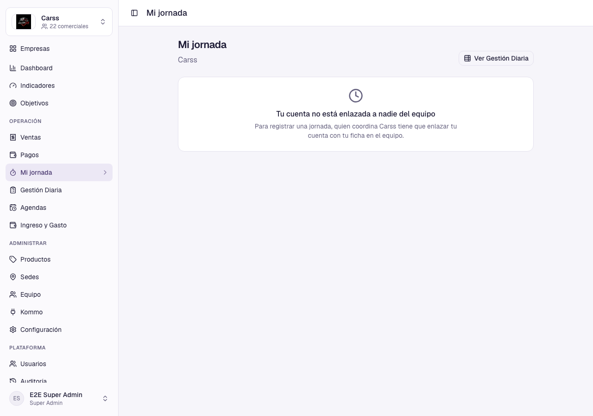
Ver en el video: ▶ 4:52
En , columna Sede, elija la sede o “Toda la empresa”. Se guarda al instante y define desde qué sede registra la persona.
Ver en el video: ▶ 5:45
En Equipo, clic en la papelera de la fila → “¿Quitar a X del equipo?” → Quitar. Sus registros se conservan a su nombre.
Ver en el video: ▶ 18:12 · ▶ 11:26
Ruta: /empresas · Menú:
El listado muestra una franja con los totales del mes de todas las empresas (Ventas, Renovaciones, Licencias, Facturación, Recaudo) y una tarjeta por empresa con sus sedes, comerciales y cifras del mes, más el botón Entrar.
Ver en el video: ▶ 1:28 · ▶ 1:51 · ▶ 2:11 · ▶ 2:32
Ruta: /empresas/nueva
Después de crearla: cargue el logo y el WhatsApp en Configuración (5.2), cree los productos (capítulo 8) y arme el equipo (capítulo 7).
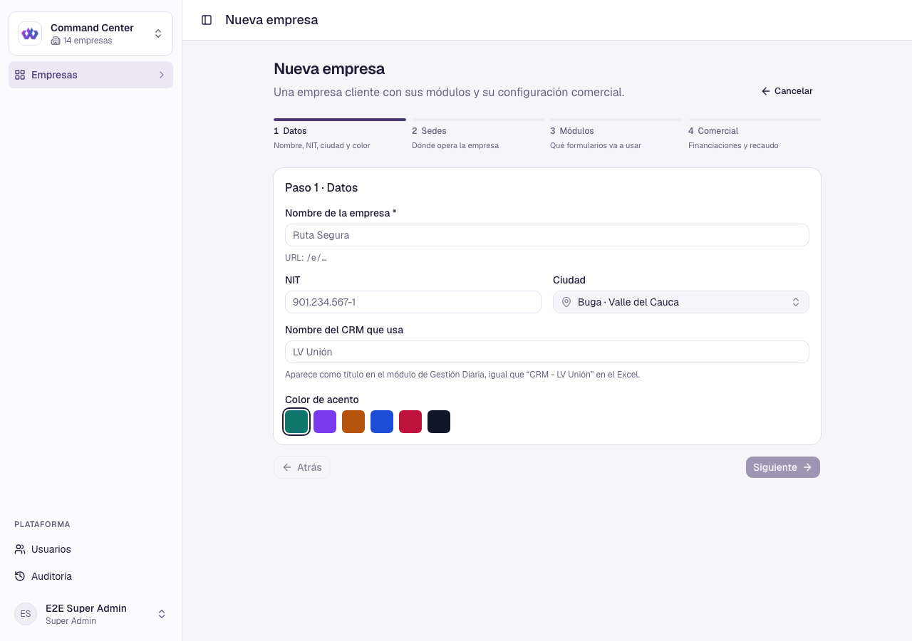
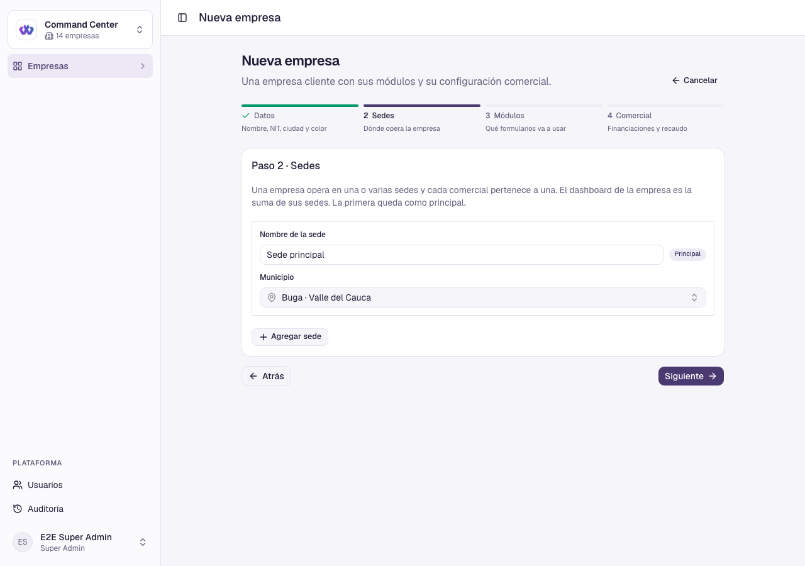
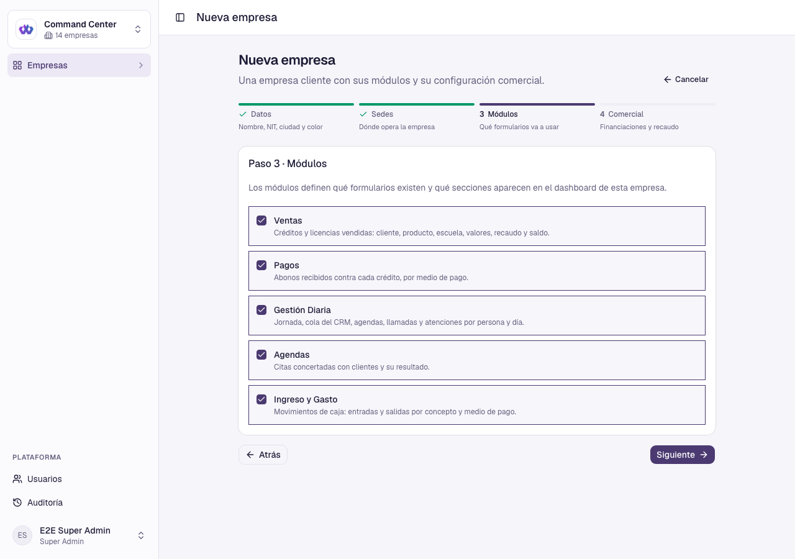
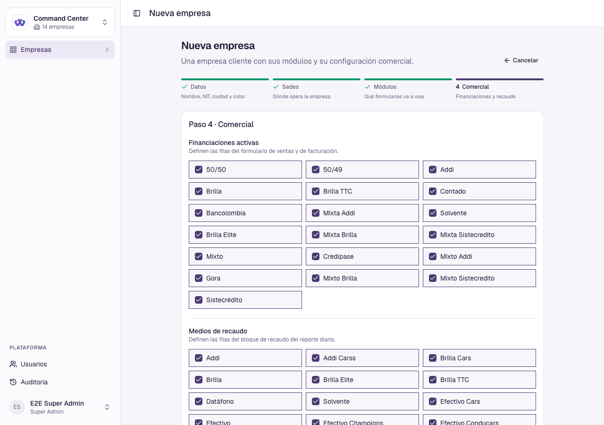
Ver en el video: ▶ 9:53 · ▶ 17:54
Ruta: /e/[empresa]/configuracion · Menú:
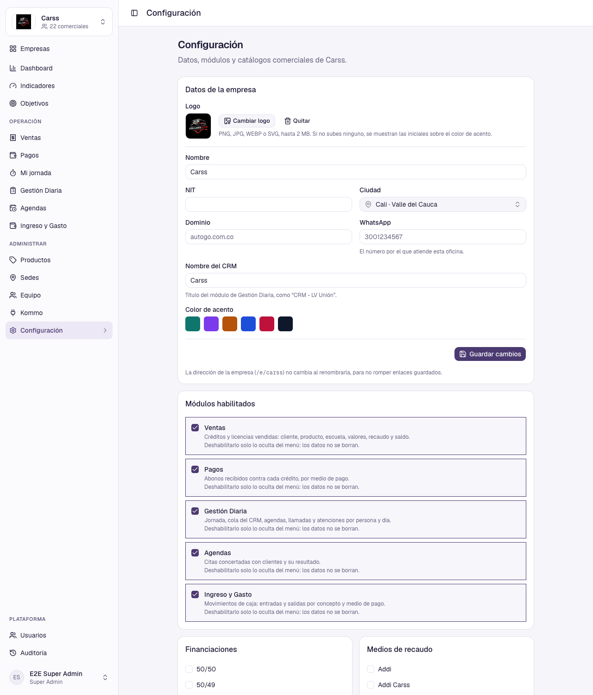
Ver en el video: ▶ 2:11 · ▶ 9:53
En Configuración, sección “Módulos habilitados”: cada casilla se guarda al instante. Al desactivar uno, su entrada desaparece del menú para todos los usuarios de la empresa. Los datos no se borran; al reactivarlo vuelven a verse.
Ver en el video: ▶ 2:32
En Configuración, secciones “Financiaciones” y “Medios de recaudo”: casillas que se guardan al instante. Son las opciones que aparecen al registrar ventas y pagos.
Ver en el video: ▶ 10:22
Ver en el video: ▶ 10:22
Ruta: /e/[empresa]/sedes · Menú: Super Admin · Coordinador
Cada tarjeta de sede muestra sus comerciales, ventas del mes, facturación y contactabilidad.
Ver en el video: ▶ 4:00 · ▶ 17:16
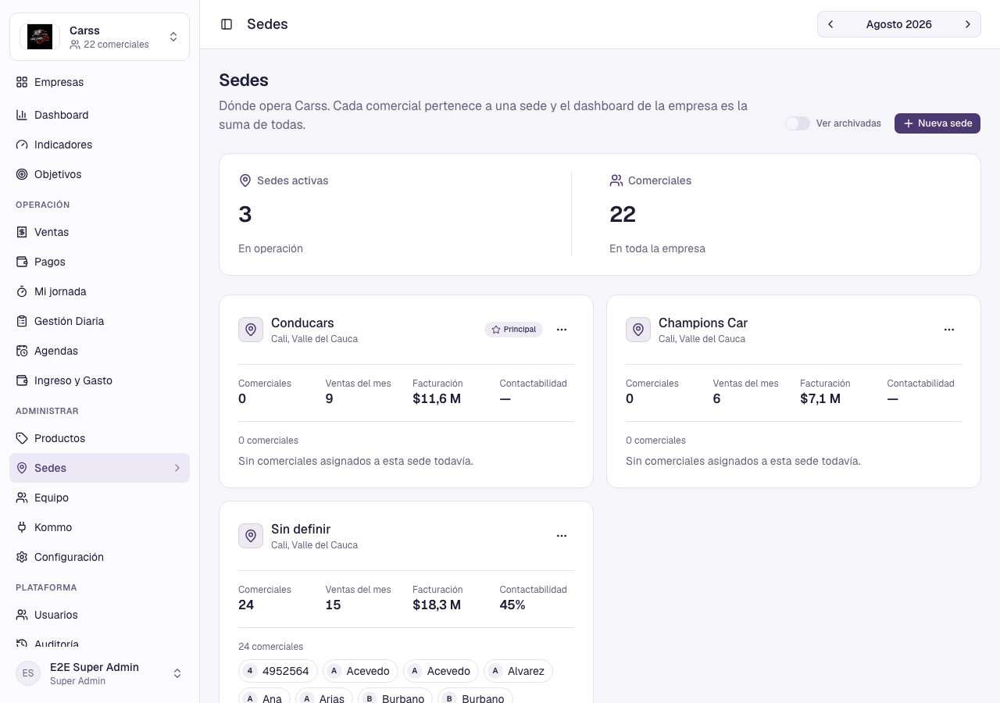
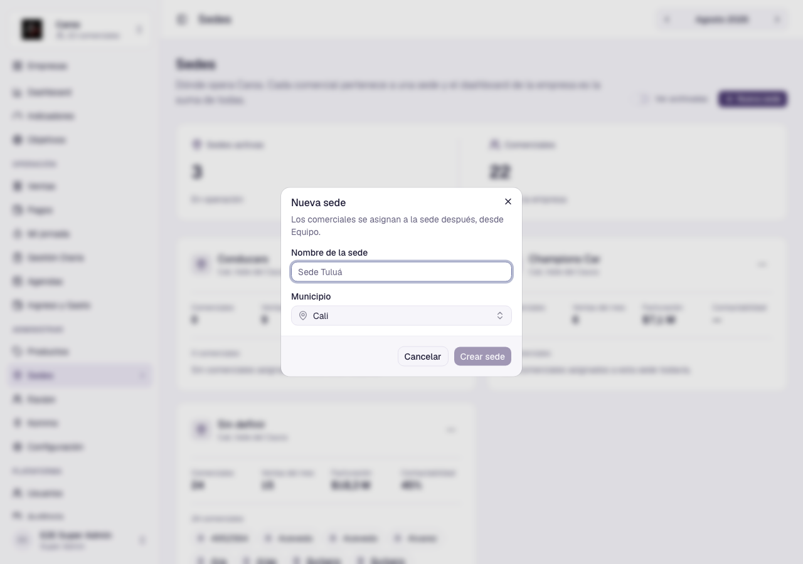
En la tarjeta, ⋯ → . Solo hay una principal.
⋯ → lleva a Equipo, donde se cambia la sede de cada persona (4.4).
El nombre de una sede no se edita desde la aplicación. Si hay un error de escritura, cree la sede correcta, mueva al equipo y archive la equivocada.
Ruta: /e/[empresa]/usuarios · Menú: Super Admin · Coordinador
El equipo son los comerciales de la empresa: las personas que aparecen como responsables de ventas y jornadas. Una ficha de comercial puede tener o no una cuenta de acceso. Mucha gente del histórico existe como ficha sin cuenta.
Ver el paso a paso en 4.2.
Ver en el video: ▶ 4:52 · ▶ 17:29
Columna Sede → elija la sede o “Toda la empresa”. Se guarda al instante.
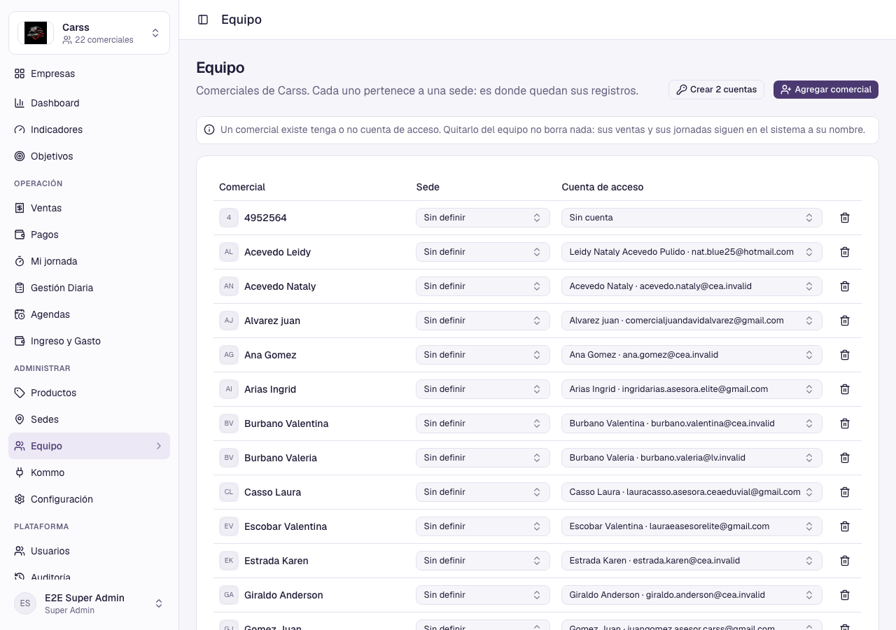
Columna Cuenta de acceso → elija la cuenta o “Sin cuenta”.
Ver en el video: ▶ 5:22
.invalid. Cámbielo por el correo real desde (3.2). La cuenta conserva su histórico.Ver en el video: ▶ 5:45
Papelera → Quitar. Ver 4.5.
Ruta: /e/[empresa]/productos · Menú: Super Admin · Coordinador
Los productos son lo que el comercial elige al registrar una venta. Si la empresa no tiene productos, el valor de cada venta se digita a mano.
Ver en el video: ▶ 3:35 · ▶ 16:55
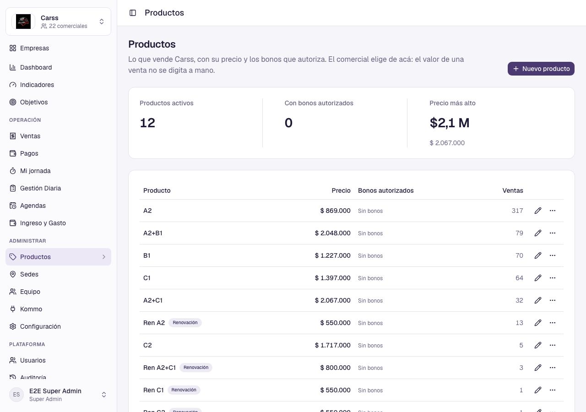
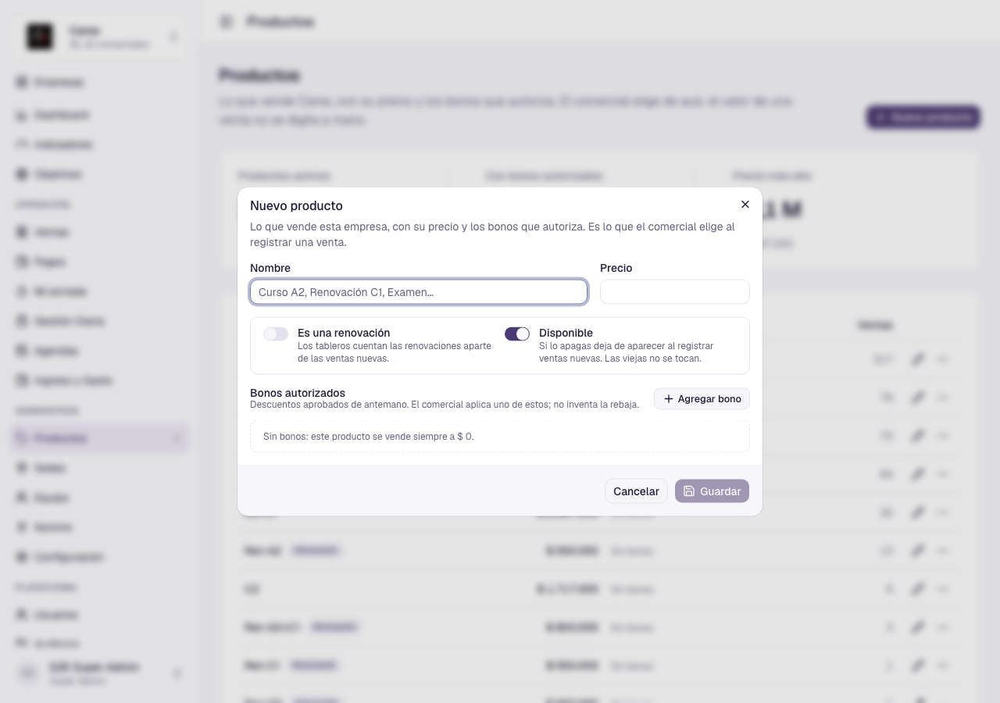
Ruta: /e/[empresa]/ventas · Menú: Todos los miembros de la empresa
Arriba, los totales del filtro: Ventas, Licencias, Facturación, Recaudado, Saldo y Por recontactar (ventas con 85 días o más sin certificar). La tabla muestra Fecha, Cliente, Producto, Financiación, Responsable, Estado, Valor, Recaudo y Saldo. Un ícono ⚠ avisa “Lleva N días sin certificarse”.
Ver en el video: ▶ 14:35
Campos Buscar, Desde, Hasta, Sede (si hay más de una), Responsable y botón Limpiar. La lista pagina de 25 en 25 con Anterior y Siguiente. Estos mismos filtros están en Pagos, Gestión Diaria, Agendas e Ingreso y Gasto.
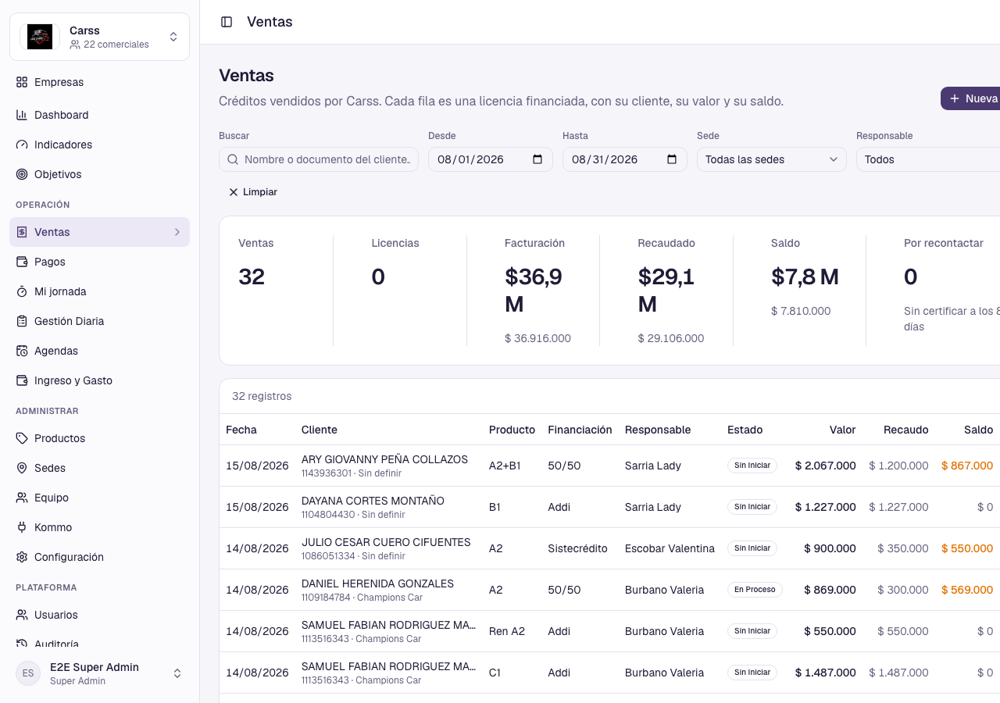
Ver en el video: ▶ 20:26 · ▶ 20:56 · ▶ 21:25
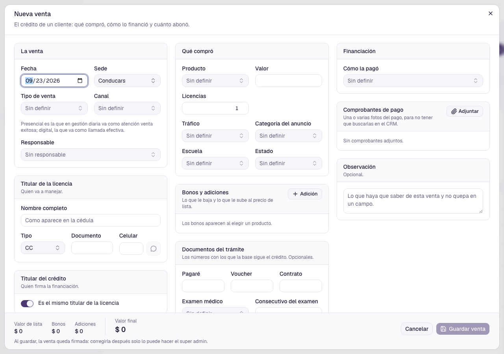
Ruta: /e/[empresa]/pagos · Menú: Todos los miembros de la empresa
Ver en el video: ▶ 15:27 · ▶ 22:11
En la lista, la etiqueta “aprox.” marca una fecha estimada (datos importados del Excel) y “sin venta” un pago que no se pudo asociar. El comprobante se abre con un enlace seguro que vence en una hora.
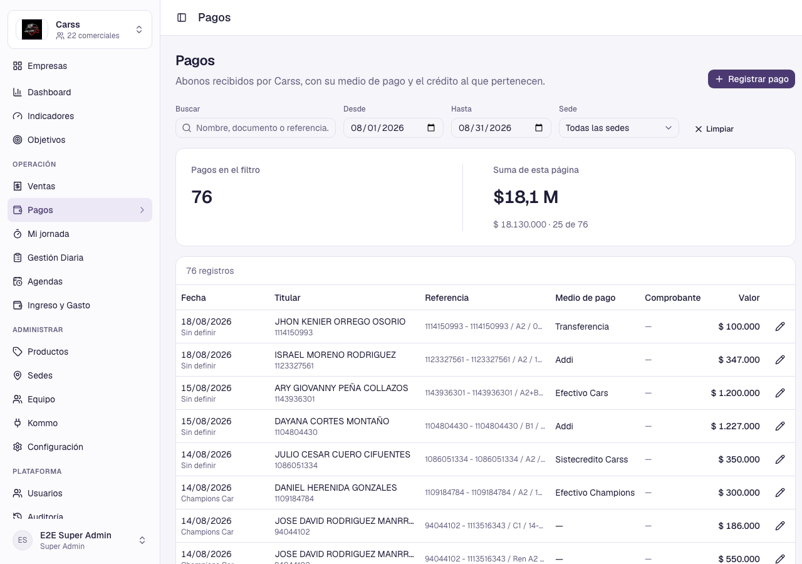
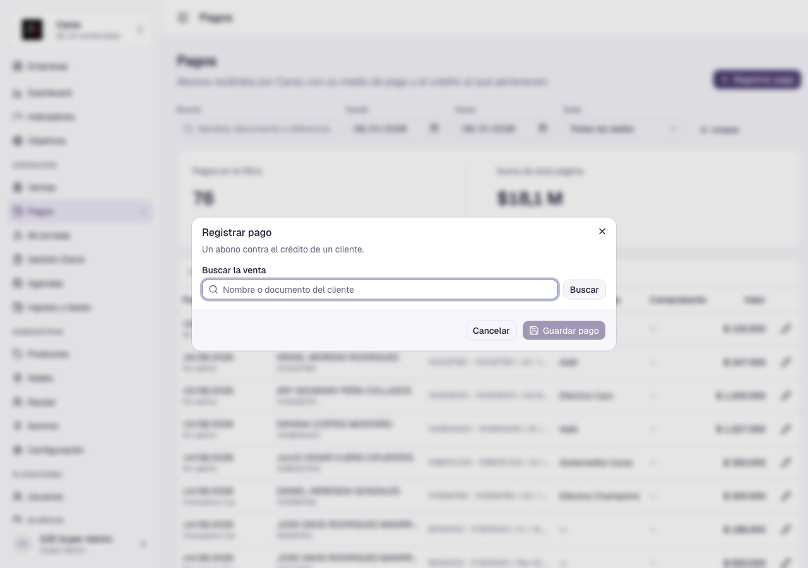
Ruta: /e/[empresa]/mi-jornada · Menú: Quien tenga cuenta enlazada a su ficha del equipo
Mi jornada registra el día mientras pasa: hora de llegada, cada llamada, cada atención y cada pausa. Al cerrar, los contadores de Gestión Diaria se llenan solos.
Ver en el video: ▶ 22:33
Clic en Baño, Capacitación o Almuerzo. Durante la pausa no se puede registrar nada. Se termina con Volver al trabajo.
Tres tarjetas: Inicial, Medio día y Final. Cada una pide Chats por responder, Tareas del día y Tareas caducadas → Guardar.
Ruta: /e/[empresa]/gestion-diaria · Menú: Todos los miembros de la empresa
Es la vista tipo Excel de las jornadas: Llegada (en rojo si llegó tarde), Llamadas, Contestadas, Ventas, Agendas, Atención, Cola del CRM y Contactabilidad. Sirve para registrar un día de memoria o corregir uno.
Ver en el video: ▶ 15:50 · ▶ 22:33 · ▶ 23:04
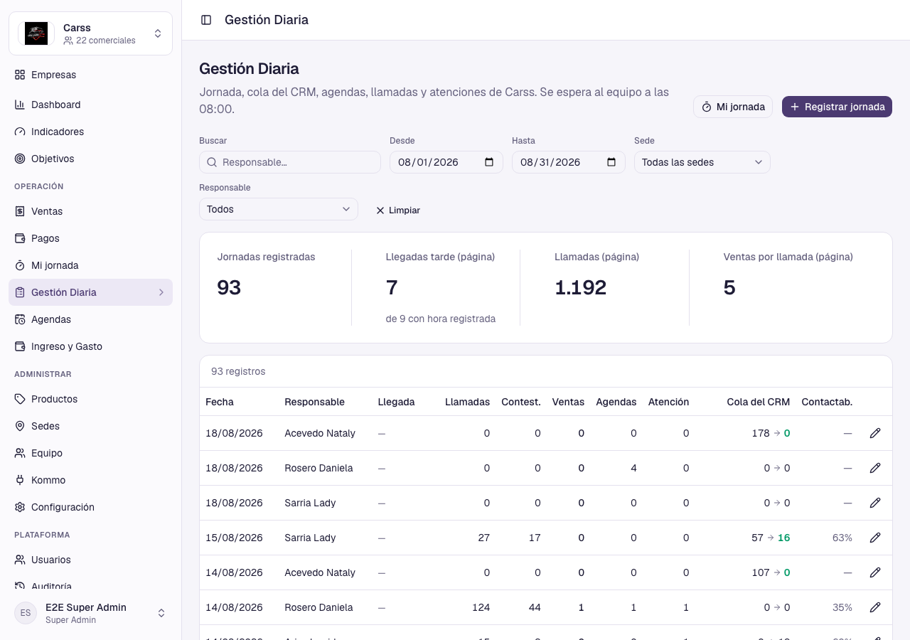
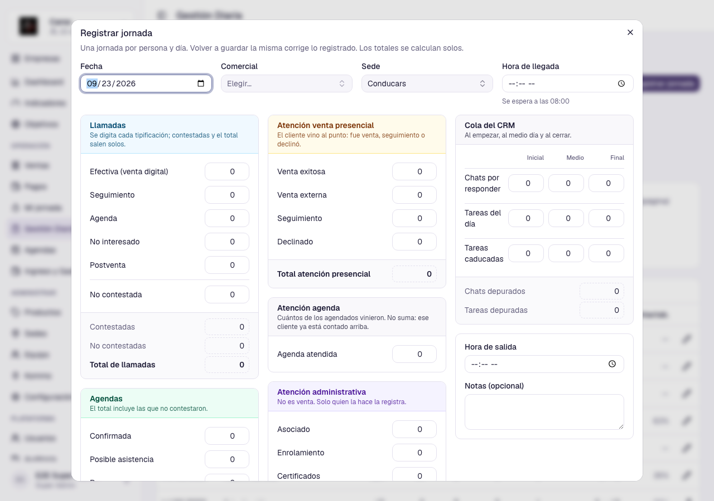
Ver en el video: ▶ 16:15 · ▶ 23:38
Ruta: /e/[empresa]/agendas · Menú:
Las agendas son las tareas del calendario de Kommo. Aquí solo se consultan: Fecha, Hora, Cliente, Celular, Responsable, Resultado, Observación y Origen (Kommo con enlace al lead, Excel o App). Se crean y corrigen en Kommo.
Quien administra la empresa, si Kommo está conectado, puede traer un rango a mano: Traer de Kommo → Desde y Hasta → Traer.
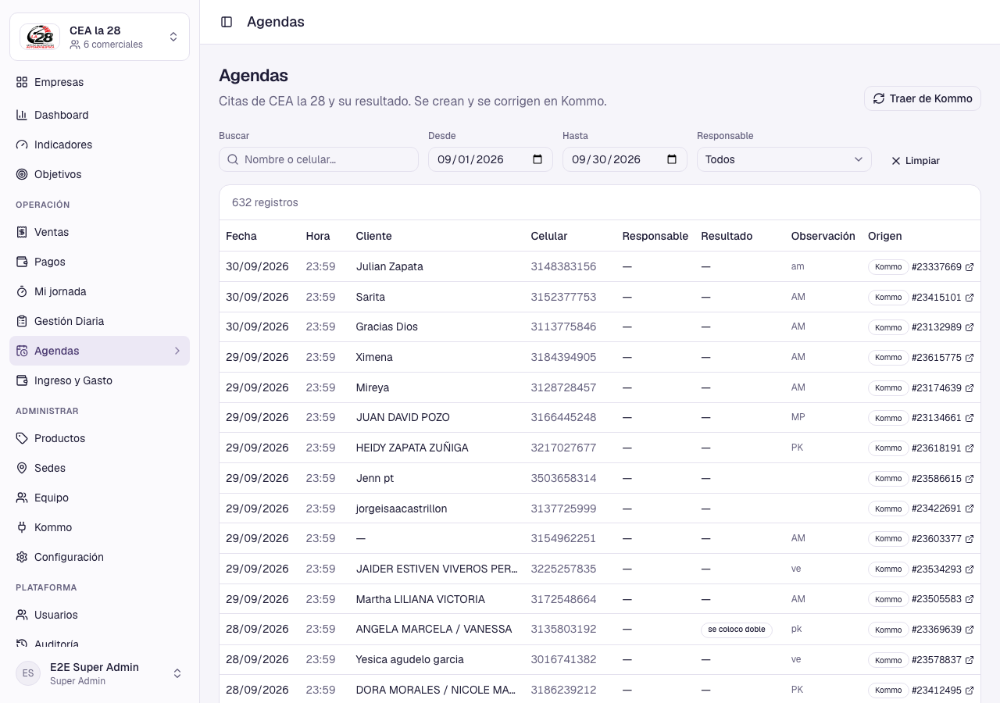
Ruta: /e/[empresa]/kommo · Menú:
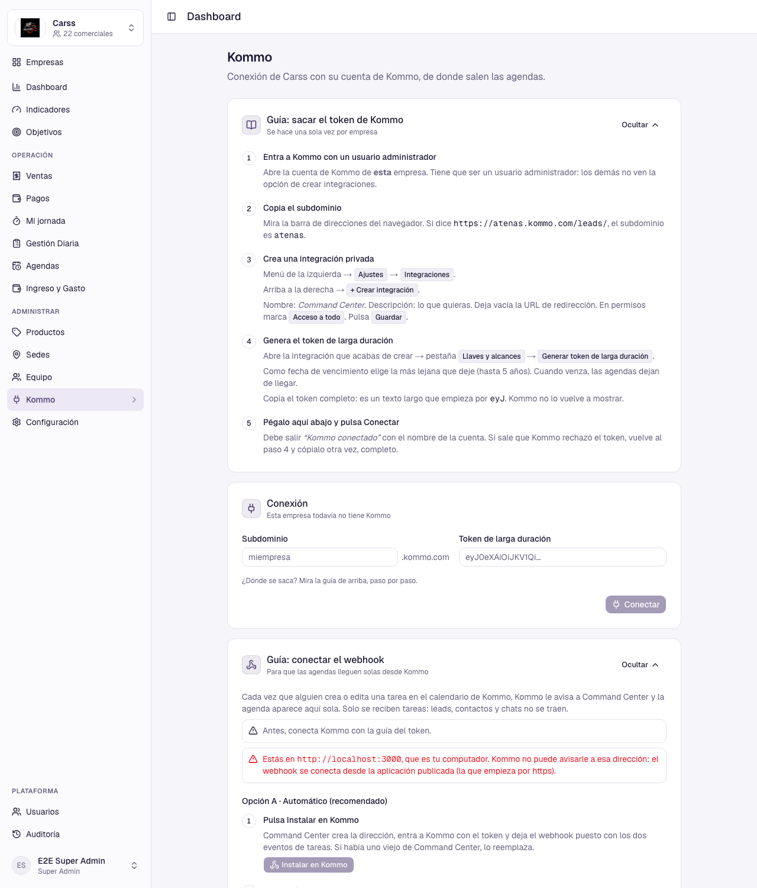
Con el webhook, cada tarea creada o cambiada en Kommo llega sola a Command Center.
Cambiar token y Desconectar están en la misma pantalla.
Ver en el video: ▶ 16:31
Ruta: /e/[empresa]/caja · Menú: Super Admin · Coordinador
Arriba se ven Movimientos, Entradas, Salidas y Neto del filtro actual.
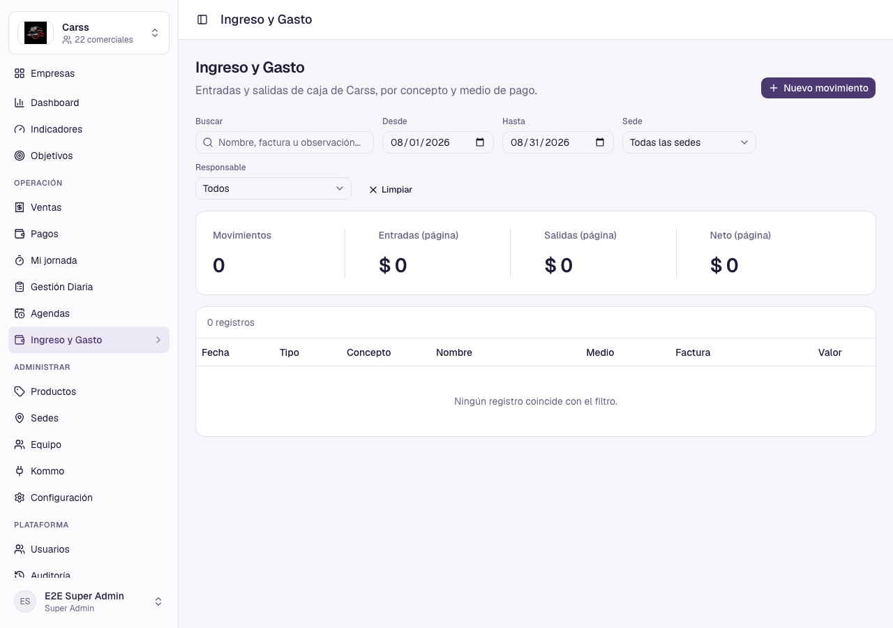
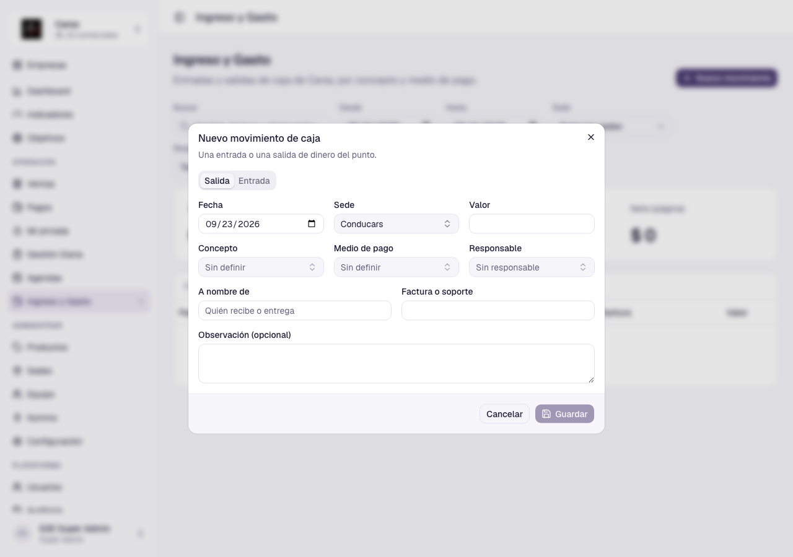
Ver en el video: ▶ 7:51 · ▶ 14:07
Ruta: /e/[empresa]/objetivos · Menú: Ven todos · Editan Super Admin y Coordinador
Una meta en 0 se borra y aparece “sin meta”. Si la suma de las metas individuales no coincide con la de empresa, sale una advertencia ámbar que no bloquea. Quien no puede editar ve “Estás viendo las metas en modo lectura”.
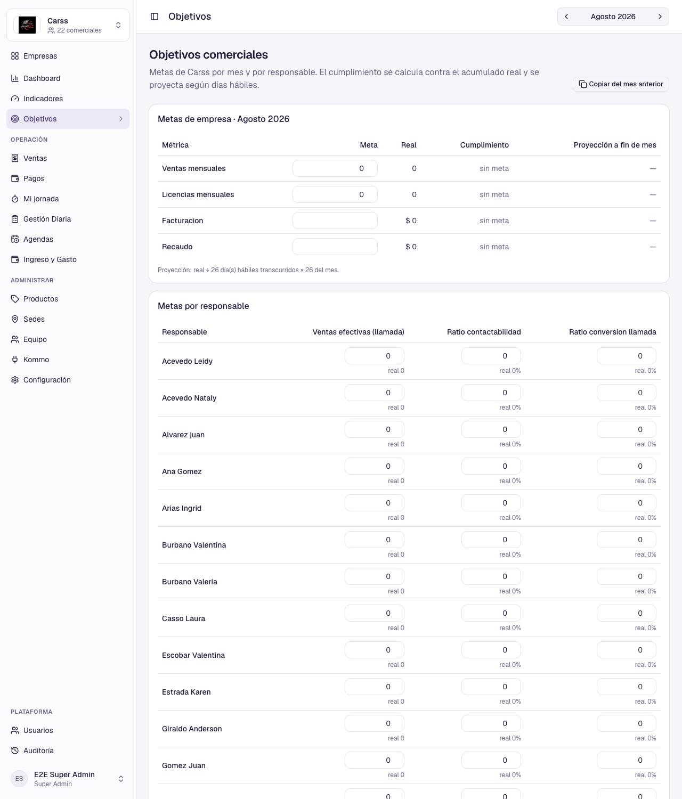
Ver en el video: ▶ 8:23 · ▶ 8:51 · ▶ 12:57 · ▶ 13:18 · ▶ 23:59
Ruta: /e/[empresa] · Menú:
Resume el mes elegido: Ventas, Licencias, Renovaciones, Facturación y Recaudo; la placa Rentabilidad de la pauta (Facturación, Ventas, Inversión en pauta, ROAS, Costo por venta); Evolución diaria; Embudo de la gestión; Ventas por financiación; Recaudo por medio de pago; comparativo Por sede; Ranking de comerciales; y Registro de hoy, con quién ya registró su jornada.
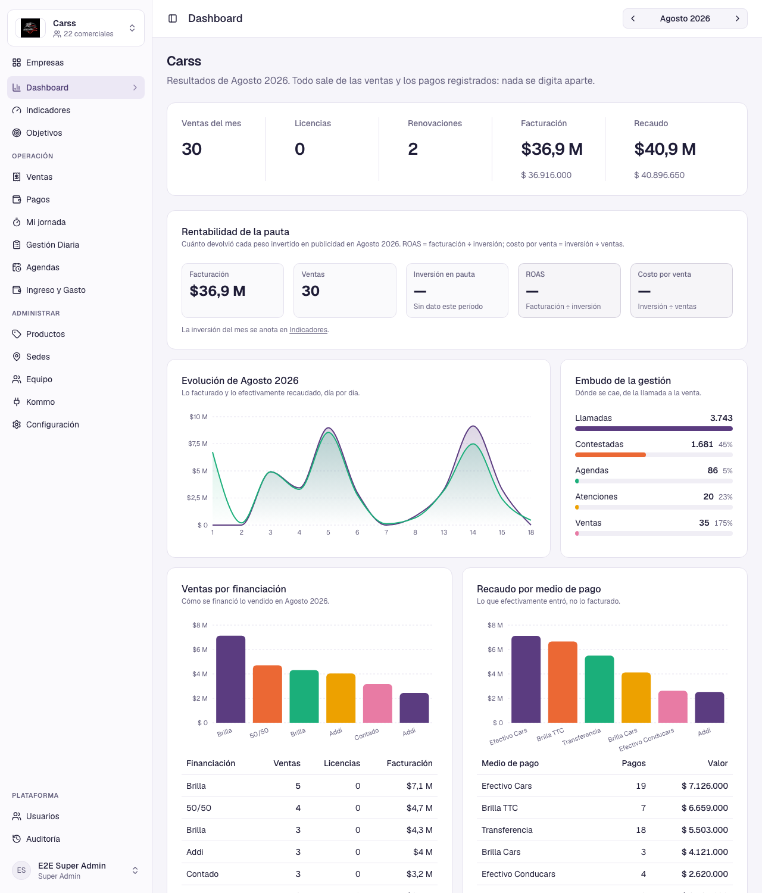
Ver en el video: ▶ 9:24 · ▶ 13:42
Ruta: /e/[empresa]/indicadores · Menú:
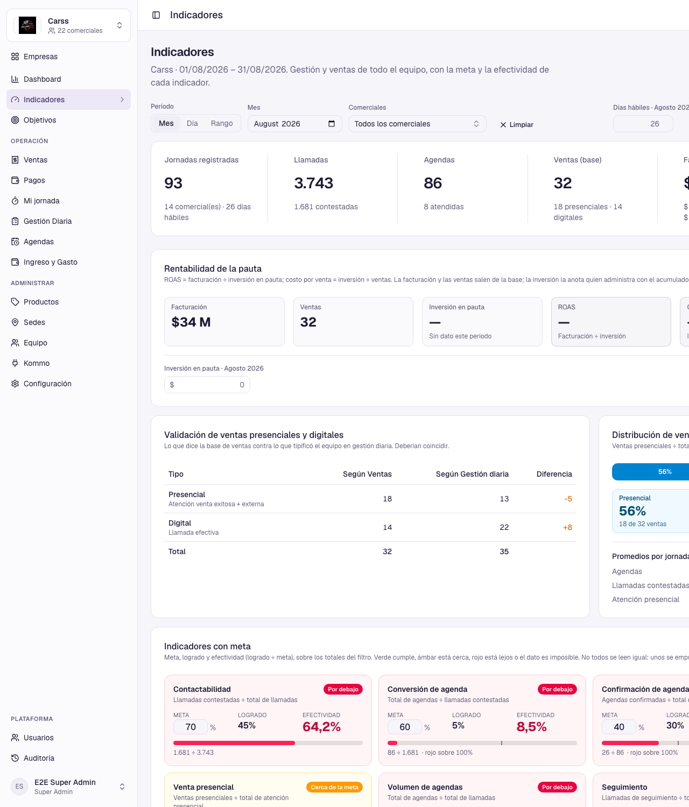
Actualice la inversión cada vez que cambie (cada dos días, según la coordinación). En un rango de varios meses se suma la inversión de cada mes.
Ver en el video: ▶ 10:57
Ruta: /admin/auditoria · Menú: Super Admin
Lista de solo lectura, 50 filas por página, con Cuándo, Quién, Acción (Creación, Cambio, Eliminación, Restauración, Archivado, Asignación, Desasignación, Borrado definitivo) y Entidad.
Qué queda registrado: creación, edición, logo, módulos, catálogos y archivado de empresas; sedes; creación, contraseña, correo, rol, estado y nombre de usuarios; asignaciones del equipo; productos; días hábiles, metas de indicadores e inversión en pauta; apertura y cierre de jornadas; borrado definitivo de empresas.
Qué no queda registrado: el guardado de ventas, pagos, jornadas, caja y objetivos. Esos registros llevan su propio responsable y fecha, que es la trazabilidad que tienen.
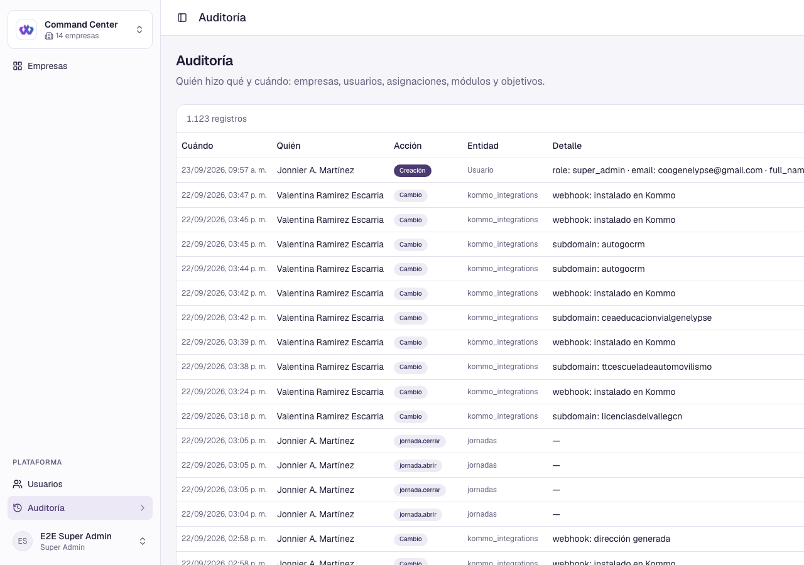
La carga masiva del histórico no se hace desde la aplicación: se hace con un programa de importación que corre el equipo técnico contra los archivos de Excel originales (formato .xlsb, uno por oficina).
.xlsb de la oficina con la misma estructura de hojas del Excel original.Para las cuentas de acceso del equipo importado, use “Crear N cuentas” (7.4) y luego corrija los correos (3.2).
| Mensaje o situación | Qué significa y qué hacer |
|---|---|
| “Correo o contraseña incorrectos.” | Revise el correo. Si olvidó la clave, pida al Super Admin que le defina una nueva (3.3). |
| “Todavía no tienes acceso a ninguna empresa” | La cuenta existe pero no está en el equipo de ninguna empresa. Un administrador debe agregarla (4.2). Así se ve: 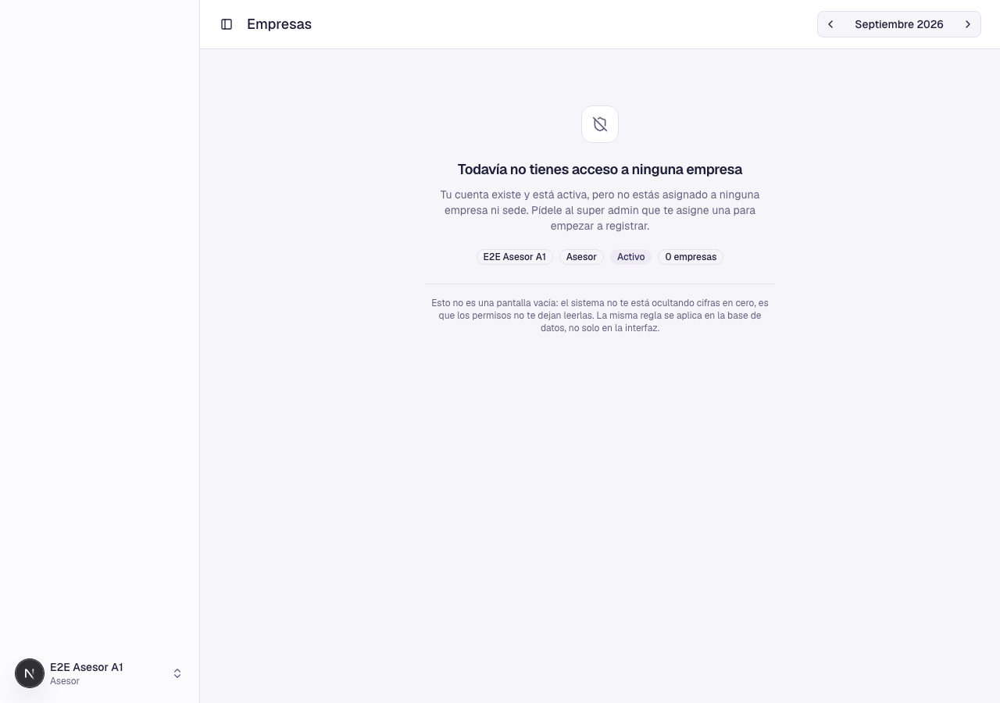 |
| “Tu acceso está suspendido” | La cuenta está inactiva. El Super Admin la activa (3.6). |
| “Tu cuenta no está enlazada a nadie del equipo” | Falta el enlace entre cuenta y ficha de comercial (4.3). |
| “Módulo no habilitado” | Ese módulo está apagado en la empresa. Se activa en Configuración (5.3). |
| “Sin acceso a X” / “Empresa no encontrada” | Está entrando a una empresa que no le fue asignada o cuya dirección cambió. Use “Ver mis empresas”. |
| “No se puede registrar una fecha futura.” | Ningún registro admite fechas posteriores a hoy. |
| No veo el botón para corregir una venta | Solo el Super Admin corrige ventas guardadas (9.2). |
| El pago no deja guardar sin comprobante | La venta es a crédito: el comprobante es obligatorio (10.1). |
| “Hay N comercial(es) asignados. Muévelos a otra sede primero.” | No se archiva una sede con equipo. Cambie la sede de cada persona en Equipo (7.2). |
| ROAS y costo por venta salen en “—” | Falta digitar la inversión en pauta del mes (16.3). |
| Cerré la pestaña y al volver me pidió entrar | Normal después de más de una hora sin actividad. Si el navegador guardó la sesión, entra solo. |
| Error 1102 o página en blanco al cargar | Límite del servidor (ver Anexo A). Recargue la página. Si se repite con frecuencia, avise al equipo técnico. |
| Capa | Tecnología |
|---|---|
| Aplicación web | Next.js 16 (App Router) con React 19 y TypeScript. Interfaz con Tailwind CSS 4 y componentes shadcn/ui (Radix UI). Gráficas con Recharts. Iconos Lucide. |
| Base de datos y autenticación | Supabase: PostgreSQL con seguridad por filas (RLS), Supabase Auth para las cuentas, Supabase Storage para comprobantes, Vault para el token de Kommo. 53 migraciones versionadas en el repositorio. |
| Servidor y despliegue | Cloudflare Workers con el adaptador OpenNext (@opennextjs/cloudflare). Despliegue automático en cada push a la rama main mediante Workers Builds. |
| Código fuente | GitHub, repositorio privado jonniermartinez/comman-center-. Rama de producción: main. |
| Integraciones | Kommo CRM (API v4 y webhooks) para las agendas. |
| Pruebas | Playwright (pruebas de seguridad y de funcionalidades, punta a punta). |
| Importación del histórico | Scripts en Python (tools/importar_excel.py, crear_cuentas.py, actualizar_correos.py). |
| Servicio | Identificación | Cuenta / correo |
|---|---|---|
| Aplicación en producción | https://commandcenter.genelypsepartner.com (la dirección técnica https://comman-center.commandcentergenelypse.workers.dev sigue respondiendo) | — |
| Cloudflare | Cuenta “Command center”, ID 1f5451cb956ae09fe7a1d8074cef2912. Worker comman-center (sin la “d”). Subdominio commandcentergenelypse.workers.dev. | commandcentergenelypse@gmail.com |
| Supabase | Proyecto yooqgcqdssvtkkschkku · https://yooqgcqdssvtkkschkku.supabase.co | commandcentergenelypse@gmail.com |
| Dominio | genelypsepartner.com, registrado en Namecheap el 22 de septiembre de 2026; vence el 22 de septiembre de 2027 y se renueva cada año. El subdominio commandcenter apunta al Worker por Cloudflare. Se conecta al Worker desde Cloudflare → Workers & Pages → comman-center → Settings → Domains & Routes → Add custom domain. Al cambiarlo hay que actualizar NEXT_PUBLIC_SITE_URL y las Redirect URLs en Supabase → Authentication → URL Configuration. | commandcentergenelypse@gmail.com |
| YouTube (video guía) | https://www.youtube.com/watch?v=f_lu5UzZgZo | commandcentergenelypse@gmail.com |
| GitHub | github.com/jonniermartinez/comman-center- (privado) | Cuenta del desarrollador (jonniermartinez) |
| Kommo | Una integración por empresa; token de larga duración guardado en Vault de Supabase | La cuenta Kommo de cada empresa |
| Servicio | Plan | Límites que aplican |
|---|---|---|
| Cloudflare Workers | Gratuito | 100.000 peticiones al día. 10 ms de CPU por petición: es el límite que hoy produce el “Error 1102 · Worker exceeded resource limits” en algunas cargas (medido entre 16 % y 20 % de fallos sin carga, más bajo carga sostenida). Tamaño del worker 3 MB comprimido (hoy usa 1,37 MB). Recomendación: pasar a Workers Paid (USD 5 al mes) que da 10 millones de peticiones y 30 segundos de CPU por petición. Es un cambio de plan, no de código. |
| Supabase | Gratuito | 500 MB de base de datos, 1 GB de almacenamiento de archivos (comprobantes), 5 GB de transferencia al mes, 50.000 usuarios activos al mes, 2 proyectos activos. El proyecto se pausa tras 7 días sin actividad y hay que reanudarlo desde el panel. Sin copias de seguridad automáticas. El plan Pro (USD 25 al mes) da 8 GB de base, 100 GB de archivos, 250 GB de transferencia, copias diarias de 7 días y no se pausa. |
| Supabase Storage (comprobantes) | — | Bucket privado comprobantes-pago. Imágenes o PDF de hasta 5 MB por archivo. Enlaces firmados que vencen en una hora. |
| Supabase Auth | — | Sin correos: no se usa SMTP, no hay invitaciones ni recuperación por correo. Registro público apagado. Sesión de una hora renovada por el navegador. |
| Logos de empresa | — | PNG, JPG, WEBP o SVG hasta 2 MB. |
| Kommo API | Según plan de Kommo | Kommo limita a 7 peticiones por segundo por cuenta. El webhook evita consultas repetidas. |
| Namecheap (dominio) | Registro anual | genelypsepartner.com vence el 22 de septiembre de 2027; renovarlo antes de esa fecha o la aplicación deja de abrir por esa dirección. El DNS se administra en Cloudflare una vez apuntado. |
| GitHub | Gratuito | Repositorio privado ilimitado. Workers Builds de Cloudflare: 3.000 minutos de build al mes y 1 build concurrente en plan gratuito. |
Los límites de los planes gratuitos son los publicados por cada proveedor a la fecha de este documento y pueden cambiar; verifíquelos en los paneles de cada servicio antes de tomar decisiones de plan.
| Variable | Uso |
|---|---|
NEXT_PUBLIC_SUPABASE_URL | Dirección del proyecto de Supabase. |
NEXT_PUBLIC_SUPABASE_PUBLISHABLE_KEY | Clave publicable. Es la única clave que usa la aplicación; todo lo que alcanza está acotado por RLS. No se usa la clave de servicio en la aplicación. |
NEXT_PUBLIC_SITE_URL | Dirección pública del sitio. Cambiarla al poner el dominio propio. |
main publica en producción. Se puede publicar a mano con npm run deploy.npx wrangler tail comman-center --format pretty.supabase/migrations/, aplicadas en orden. Panel de Supabase para SQL, usuarios y archivos.docs/ARQUITECTURA.md, docs/SUPABASE.md, docs/DESPLIEGUE.md y docs/feedback/ con los requerimientos recibidos por fecha.